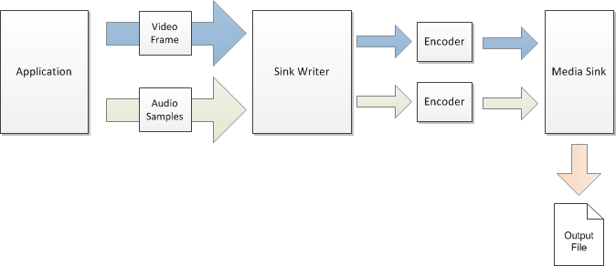

The sink writer is a component for encoding audio or video files.
The following diagram shows, at a high level, how an application uses the sink writer to encode and audio/video file.

The sink writer hosts a media sink and optionally one or more encoders. The encoders convert uncompressed audio or video data to encoded bitstreams. The media sink outputs the bitstreams to a file. The sink writer performs the following tasks:
The application passes audio/video data to the sink writer as input. It does not matter how the application obtains or generates the input data. One option is to use the Source Reader, as shown in the following diagram. However, the sink writer does not require the use of the source reader. These two components are independent.
Overview of Encoding in Media Foundation
Â
Â